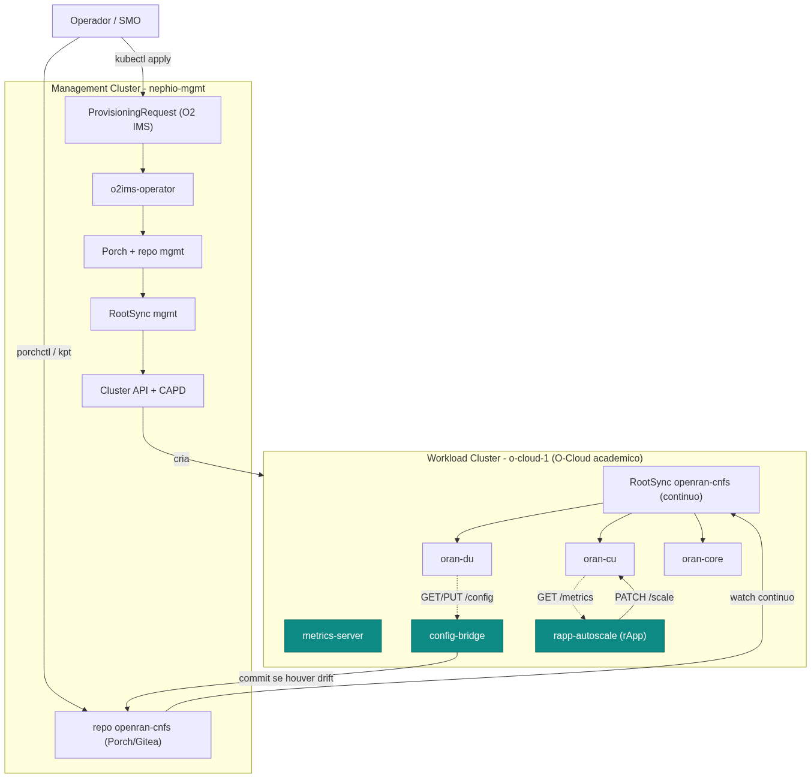
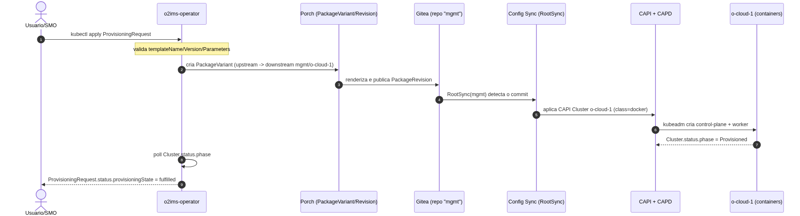
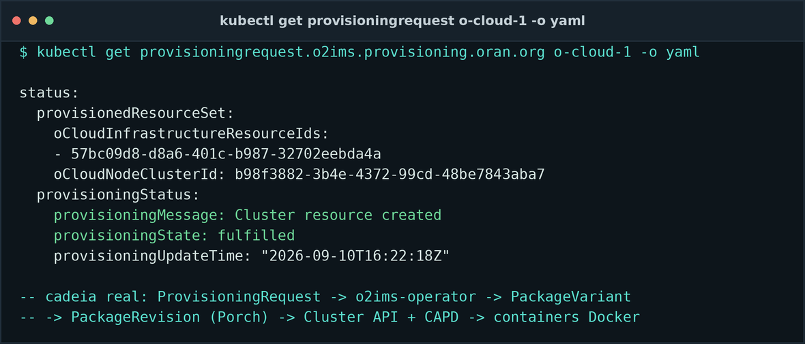
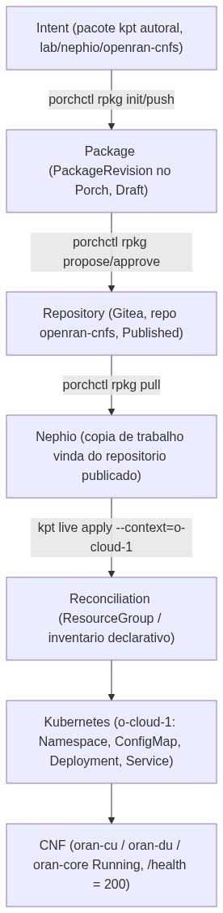
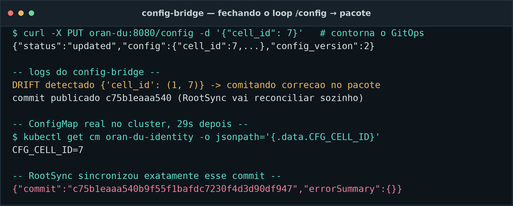
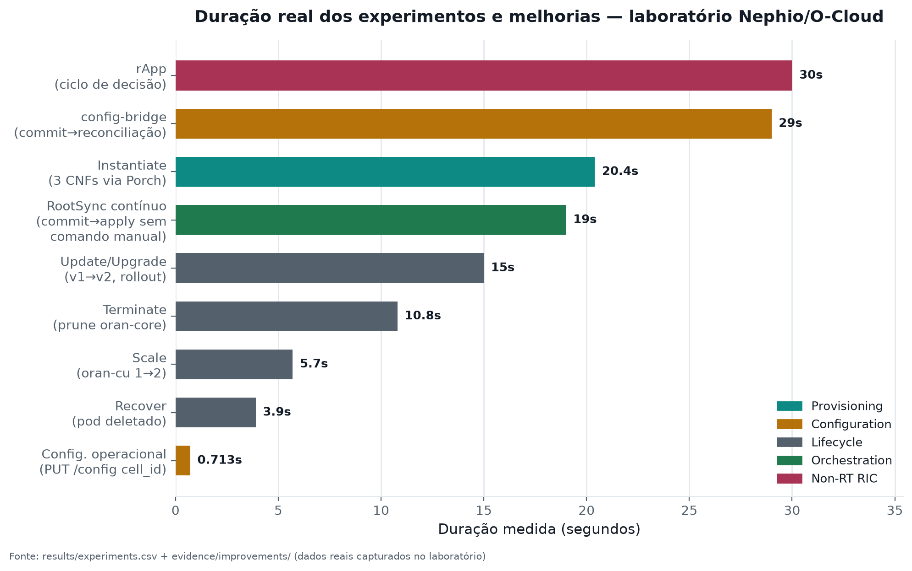
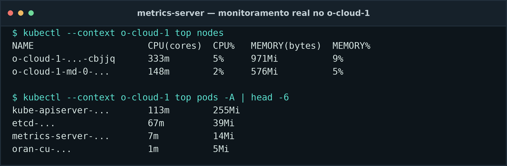
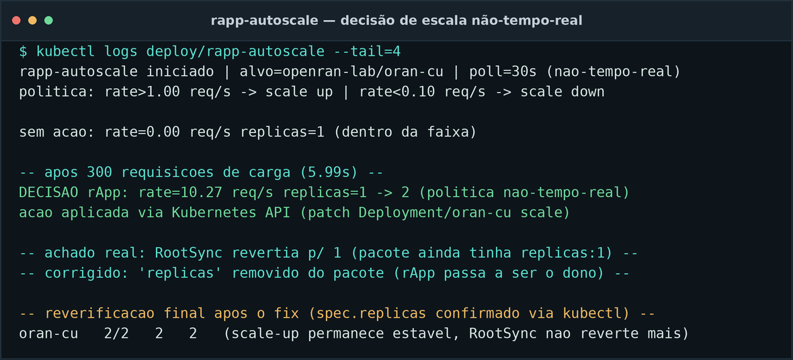
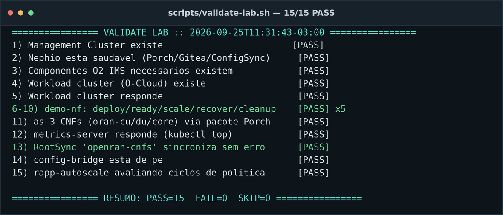
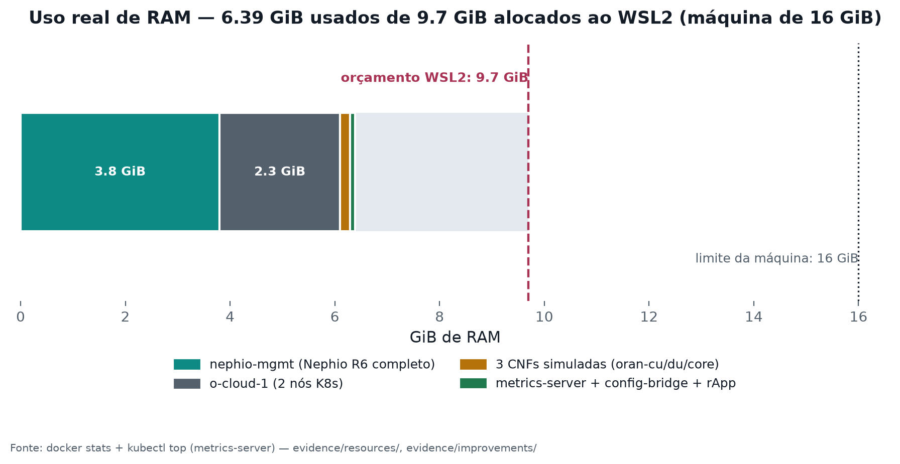

Usar o Nephio (analisado teoricamente na Parte 1) para, na prática, provisionar e
gerenciar uma pilha Open RAN simulada — três Network Functions representativas
(oran-cu, oran-du, oran-core) — sobre um O-Cloud
provisionado pelo próprio Nephio via O2 IMS, demonstrando os mecanismos reais de
provisioning, configuration management, orchestration, monitoring, lifecycle management
e uma primeira função de Non-RT RIC (rApp), com evidência mensurável (tempo, RAM, CPU) de
cada operação.
| Item | Valor |
|---|---|
| Host | Windows 11 Enterprise, 16 GB RAM, WSL2 + Ubuntu 26.04 LTS |
| Runtime | Docker Engine 29.8.0 nativo no WSL2 |
| Kubernetes | kind — management cluster nephio-mgmt (K8s v1.32.0, 1 nó) + workload cluster o-cloud-1 (K8s v1.31.0, 2 nós) |
| Nephio | R6 (v6.0.0), catálogo v6, instalação mínima (34/35 pods, 76 CRDs) |
| Ferramentas de pacote | kpt v1.0.0, Porch v1.5.6, porchctl v1.5.6 |
| Limite de RAM configurado | .wslconfig: memory=10GB, processors=6, swap=4GB |
Detalhes completos: docs/environment-assessment.md e docs/02-nephio-installation.md.

o-cloud-1 — já demonstrado
e evidenciado na Parte 1 / docs/05-experiment-report.md.o-cloud-1 via um pacote kpt
publicado no Porch (repositório dedicado openran-cnfs), reconciliado
continuamente por um RootSync no próprio o-cloud-1 — ver
docs/provisioning-flow.md.metrics-server, config-bridge e
rapp-autoscale rodam dentro do o-cloud-1, consumindo as mesmas APIs
que as camadas 1 e 2 já expõem.

ProvisioningRequest: provisioningState: fulfilled, com os IDs de recurso gerados pelo o2ims-operator.| Ferramenta | Papel nesta Parte 2 |
|---|---|
| kpt | autoria do pacote (lab/nephio/openran-cnfs), pipeline de funções, inventário declarativo (ResourceGroup) |
| Porch / porchctl | ciclo de vida do pacote (Draft → Proposed → Published), repositório dedicado |
| Config Sync / RootSync | reconciliação GitOps contínua do repositório openran-cnfs dentro do próprio o-cloud-1 |
| kind + Cluster API + CAPD | criação do o-cloud-1 (via O2 IMS) |
| metrics-server | métricas reais de CPU/RAM por nó e por pod |
| kubectl | operações imperativas de comparação (scale, delete pod) e validação |
| FastAPI/Python + Docker | as 3 CNFs simuladas, o config-bridge e o rapp-autoscale |
oran-cu, oran-du, oran-core — workloads
representativos (FastAPI, ~30–50 MiB de RAM cada), não NFs O-RAN reais. Cada uma
expõe /health, /config (GET/PUT/POST), /metrics
(Prometheus). A configuração de domínio de oran-du (plmn_id,
cell_id, tx_power_dbm, du_id) é lida do
ConfigMap do pacote, o que permite ao config-bridge (§7) saber qual é
o "estado publicado" ao decidir se precisa corrigir um desvio. Detalhes e justificativa em
lab/cnfs/README.md e avaliação de substituição por NFs reais em
docs/real-nf-extension.md (não realizada — RAM insuficiente para um core 5G real
ao lado do Nephio completo).
DEFAULT_CONFIG = {
"plmn_id": os.environ.get("CFG_PLMN_ID", "00101"),
"cell_id": int(os.environ.get("CFG_CELL_ID", "1")),
"tx_power_dbm": int(os.environ.get("CFG_TX_POWER_DBM", "20")),
"du_id": int(os.environ.get("CFG_DU_ID", "1")),
}
@app.get("/health")
def health():
return {
"status": "ok", "nf_name": NF_NAME, "nf_type": NF_TYPE,
"nf_version": NF_VERSION,
"uptime_seconds": round(time.time() - STATE["start_time"], 1),
}
@app.put("/config")
def put_config(update: dict = Body(default_factory=dict)):
return _apply_config_update(update) # incrementa config_version a cada chamada
Fluxo completo demonstrado em docs/provisioning-flow.md: pacote kpt autoral →
porchctl rpkg init/pull/push/propose/approve → PackageRevision
Published no repositório openran-cnfs → reconciliação declarativa no
o-cloud-1. Experimento 1: provisionamento das 3 CNFs do zero em
20,4 s (results/experiments.csv).

== 1) publica/atualiza o pacote no Porch (repo=openran-cnfs pkg=openran-nfs) == revisão mais recente: openran-cnfs.openran-nfs.v1789101326 — criando uma NOVA revisão (rpkg copy) openran-cnfs.openran-nfs.v1789101492 created openran-cnfs.openran-nfs.v1789101492 pushed openran-cnfs.openran-nfs.v1789101492 proposed openran-cnfs.openran-nfs.v1789101492 approved == reconcilia no o-cloud-1 (ResourceGroup = inventário declarativo) == initializing "resourcegroup.yaml" data (namespace: default)...success apply phase started namespace/openran-lab apply successful configmap/oran-core-identity apply successful configmap/oran-cu-identity apply successful configmap/oran-du-identity apply successful service/oran-core apply successful service/oran-cu apply successful service/oran-du apply successful deployment.apps/oran-core apply successful deployment.apps/oran-cu apply successful deployment.apps/oran-du apply successful apply result: 10 attempted, 10 successful, 0 skipped, 0 failed reconcile result: 10 attempted, 10 successful, 0 skipped, 0 failed, 0 timed out == validação == oran-cu -> 200 {"status":"ok","nf_name":"oran-cu","nf_type":"O-CU","nf_version":"v1","uptime_seconds":6.8} oran-du -> 200 {"status":"ok","nf_name":"oran-du","nf_type":"O-DU","nf_version":"v1","uptime_seconds":7.9} oran-core -> 200 {"status":"ok","nf_name":"oran-core","nf_type":"5GC-AMF-sim","nf_version":"v1","uptime_seconds":9.1}
Duas camadas distintas, deliberadamente não confundidas, e uma ponte real entre elas:
/config de cada CNF. Experimento 2: oran-du.cell_id
1 → 2 via PUT /config, em 0,7 s.ConfigMap/Deployment
no pacote autoral e republicar via Porch. Usado no Experimento 5 (upgrade) — ver §8.config-bridge — a ponte entre as duas. Um poller que compara o
/config ao vivo de oran-du com o ConfigMap publicado no pacote e
comita a correção quando há divergência — o RootSync (§9) reconcilia o resto sozinho.ANTES:
{"nf_name":"oran-du","config_version":1,"config":{"plmn_id":"00101","cell_id":1,"tx_power_dbm":20,"du_id":1}}
DEPOIS:
{"status":"updated","nf_name":"oran-du","config_version":2,"config":{"plmn_id":"00101","cell_id":2,"tx_power_dbm":20,"du_id":1}}
ConfigMap consumido via
envFrom não dispara um novo rollout do Deployment — o hash do
pod template não muda, então o Kubernetes não cria novos Pods, e os Pods já existentes mantêm as
variáveis de ambiente antigas até reiniciarem por outro motivo. Corrigido adicionando um carimbo
de versão em spec.template.metadata.annotations, que força a criação de um novo
ReplicaSet (ver YAML em §9).Comando: PUT /config {"cell_id": 7} em oran-du — contornando
deliberadamente o GitOps, como um operador faria numa correção manual de emergência.

CFG_PLMN_ID: 00101 sem aspas — um padrão
que o resolvedor de tipos do YAML 1.1 reconhece como número, e que na releitura virou o
inteiro 101 (perdendo o zero à esquerda). Isso causava um loop de
auto-correção a cada 15 s. Corrigido forçando default_style="'" no
yaml.dump — igual ao que o Kubernetes já faz implicitamente (todo valor de
ConfigMap.data é string).| Operação | Experimento | Duração | Resultado |
|---|---|---|---|
| Instantiate | 1 | 20,4 s | 3/3 NFs Running |
| Scale (1→2) | 3 | 5,7 s | oran-cu 2/2 Running |
| Update/Upgrade (v1→v2) | 5 | 15,0 s | revision 1→2, rollout real, /health.nf_version=v2 |
| Recover (falha) | 4 | 3,9 s | pod deletado → novo pod Running, nome diferente |
| Terminate | 6 | 10,8 s | oran-core removido via prune (não kubectl delete manual) |
Todos os 6 experimentos formais de lifecycle: SUCCESS (results/experiments.csv).

openran-cnfs.openran-nfs.v1789101547 created / pushed / proposed / approved NAME REVISION LATEST LIFECYCLE REPOSITORY openran-cnfs.openran-nfs.v1789101547 6 true Published openran-cnfs apply result: 10 attempted, 10 successful, 0 skipped, 0 failed NAME READY STATUS RESTARTS AGE pod/oran-cu-589c8458db-q5csv 1/1 Terminating 0 61s pod/oran-cu-c44ff566c-jq728 1/1 Running 0 5s oran-cu -> 200 {"status":"ok","nf_name":"oran-cu","nf_type":"O-CU",""nf_version":"v2","uptime_seconds":1.9}
prune phase started deployment.apps/oran-core prune successful service/oran-core prune successful configmap/oran-core-identity prune successful prune phase finished apply result: 7 attempted, 7 successful, 0 skipped, 0 failed prune result: 3 attempted, 3 successful, 0 skipped, 0 failed oran-core -> (não presente no pacote atual)
A orquestração observada opera em três granularidades:
Publicou-se uma nova revisão do pacote no Porch (nf-version: v2→v3)
sem rodar nenhum kpt live apply manual no o-cloud-1.
== NAO rodei kpt live apply no o-cloud-1. Observando o RootSync sozinho... == 03:57:55 rootsync.commit=1bdae53df4d1 oran-cu.nf-version=v2 03:58:02 rootsync.commit=1bdae53df4d1 oran-cu.nf-version=v2 03:58:08 rootsync.commit=1bdae53df4d1 oran-cu.nf-version=v2 03:58:14 rootsync.commit=1bdae53df4d1 oran-cu.nf-version=v3 >>> RootSync aplicou sozinho, sem kpt live apply manual <<<
spec:
# "replicas" deliberadamente OMITIDO: o rapp-autoscale (Secao 11) e o dono
# exclusivo deste campo via PATCH no /scale subresource. kpt live apply e o
# reconciler do Config Sync usam server-side apply - nenhum dos dois
# reivindica "replicas" quando ausente do manifesto.
selector:
matchLabels: {app: oran-cu}
template:
metadata:
annotations:
# bump isto no pacote para forcar um novo ReplicaSet (rollout) - mudar
# so o ConfigMap (envFrom) NAO dispara rollout automatico no Kubernetes.
openran-lab/nf-version: "v2"
spec:
containers:
- name: oran-cu
envFrom: [{configMapRef: {name: oran-cu-identity}}]
deploy-cnfs-via-porch.sh) recriava o diretório de trabalho local — e
portanto o inventário (ResourceGroup) — a cada chamada, o que fazia o
kpt live apply gerar um inventory-id novo toda vez e, consequentemente,
recusar tocar nos recursos já existentes (policy: MustMatch,
status: NoMatch) — o Experimento 5 falhou silenciosamente duas vezes antes dessa
causa ser isolada e corrigida (persistindo o inventário entre chamadas). Este é exatamente o
tipo de comportamento de "propriedade declarativa" que diferencia orquestração GitOps de um
simples script de kubectl apply.Duas camadas, deliberadamente leves — ver docs/monitoring.md:
/metrics de cada CNF (formato Prometheus:
nf_up, nf_requests_total, nf_config_version,
nf_restart_count).metrics-server instalado no
o-cloud-1 (manifesto oficial + patch --kubelet-insecure-tls, padrão em
qualquer cluster kind) — Experimento 7: kubectl top nodes/pods retorna
CPU/RAM reais por nó e por pod, com custo de ~15 MiB de RAM.
Sem Prometheus/Grafana nem telemetria O-RAN (VES, PM Jobs) — decisão explícita de orçamento;
docker stats/free -h complementam para custo de host.
@app.get("/metrics", response_class=PlainTextResponse)
def metrics():
lines = [
"# TYPE nf_up gauge",
f'nf_up{{nf_name="{NF_NAME}",nf_type="{NF_TYPE}"}} 1',
"# TYPE nf_requests_total counter",
f'nf_requests_total{{nf_name="{NF_NAME}"}} {STATE["requests_total"]}',
"# TYPE nf_config_version gauge",
f'nf_config_version{{nf_name="{NF_NAME}"}} {STATE["config_version"]}',
]
return "\n".join(lines) + "\n"
Um rApp simulado: roda no Non-RT RIC, que é parte do próprio SMO (diferente de um xApp, que rodaria no Near-RT RIC e falaria E2 com os "E2 Nodes" — protocolo que estas CNFs simuladas não implementam; simular isso seria inventar uma interface inexistente no laboratório).
rapp-autoscale é um poller Python (não um operador kopf/
controller-runtime — o estado observado, o /metrics da NF, não é um
recurso do Kubernetes) que a cada 30 s (deliberadamente não-tempo-real — O-RAN
define rApp como >1 s, xApp como 10 ms–1 s) lê a taxa de requisições de
oran-cu e aplica uma política de capacidade: rate > 1,0 req/s →
escala para cima; rate < 0,1 req/s → escala para baixo (faixa [1..3]
réplicas), via PATCH direto no subrecurso /scale — simplificação documentada, já
que não há Near-RT RIC real neste laboratório para publicar uma policy A1. RBAC mínimo:
ServiceAccount escopado só ao Deployment/oran-cu.

replicas:2 com sucesso (200), mas o RootSync contínuo (§9)
revertia a réplica de volta a 1 segundos depois, porque o pacote ainda declarava
replicas: 1 no Git. Corrigido removendo o campo replicas do pacote —
como kpt live apply e o reconciler do Config Sync usam server-side apply,
nenhum dos dois reivindica posse do campo quando ausente, deixando o rApp como dono exclusivo (o
mesmo padrão usado quando um HPA coexiste com GitOps na vida real — Argo CD chama isso de
ignoreDifferences).Duas classes de "falha" foram tratadas neste trabalho, e são deliberadamente distinguidas:
kubectl delete pod → ReplicaSet
recria em 3,9 s (pod antigo oran-du-7d44959c84-cnsx4 → novo
oran-du-7d44959c84-sf26s). Isto é self-healing do Kubernetes (desired state
vs. actual state), não healing de uma NF de telecom (sem estado de sessão, sem
re-registro em interfaces O-RAN).porchctl rpkg push sem pull prévio;ConfigMap não dispara rollout (§7);config-bridge (§7);
| Operação | Duração (s) | Status | Detalhe |
|---|---|---|---|
| provision-all-cnfs | 20.4 | success | 3 NFs via Porch |
| config-update-oran-du-cell_id | 0.713 | success | cell_id: 1 → 2 via PUT /config |
| scale-oran-cu-1to2 | 5.7 | success | réplicas: 1 → 2 |
| recover-oran-du | 3.9 | success | pod antigo → novo, reconciliação K8s |
| upgrade-oran-cu-v1-v2 | 15.0 | success | revision 1 → 2 |
| terminate-oran-core | 10.8 | success | removido via prune |
| metrics-server-top | — | success | kubectl top real por nó/pod |
| rootsync-auto-apply | 19.0 | success | commit → aplicado sozinho, sem kpt live apply manual |
| config-bridge-round-trip | 29.0 | success | drift → commit → reconciliação |
| rapp-scale-decision | 30.0 | success | rate=10.27 req/s → scale-up 1→2 |
10/10 experimentos executados com sucesso. Validação automática
(scripts/validate-lab.sh): 15/15 PASS.

| Componente | RAM medida |
|---|---|
| nephio-mgmt (Nephio R6 completo) | ~3,7–3,9 GiB |
| o-cloud-1 (2 nós, K8s) | ~2,3 GiB |
| 3 CNFs simuladas (juntas) | < 200 MiB (dentro dos limites 128Mi/NF) |
| metrics-server + config-bridge + rapp-autoscale | ~130 MiB |
| Total dentro do WSL | ~6,4 GiB usados / 9,7 GiB configurados |
| CPUs alocadas ao WSL | 6 (de 12 threads da máquina) |
O laboratório inteiro (management + O-Cloud + 3 CNFs + Porch + Gitea + Cluster API + monitoramento + rApp) ficou bem abaixo da meta de 10–12 GB do enunciado, com folga real para os experimentos.
Este trabalho cobre o ângulo de orquestração cloud-native do SMO (Nephio: pacotes,
GitOps, O2 IMS) e uma primeira função de Non-RT RIC (o rapp-autoscale).
Deliberadamente fora de escopo:
rapp-autoscale aplica sua decisão
diretamente via API do Kubernetes, não publica uma policy A1 para um Near-RT RIC real
(que não existe neste laboratório).docs/real-nf-extension.md — não coube em 16 GB ao lado do Nephio completo).rapp-autoscale (§11) implementa a
forma de uma função de Non-RT RIC, não a plataforma nem o protocolo A1 (§15)./metrics Prometheus-like e
kubectl top.docs/05-experiment-report.md §11) — o o-cloud-1 não sobrevive a um restart abrupto
da VM do WSL2 sem re-provisionamento (CAPD + cgroup v2 do WSL2).O experimento demonstrou, com evidência mensurável e reprodutível, que o Nephio consegue
orquestrar o ciclo de vida completo de Network Functions cloud-native —
provisionamento, configuração, escala, atualização, recuperação e terminação — usando seus
mecanismos nativos (kpt, Porch, GitOps contínuo), não apenas kubectl apply. Além
disso, o laboratório demonstra monitoramento real por métrica, uma ponte funcional entre
configuração de NF e pacote GitOps, e uma primeira função de Non-RT RIC (rApp) que decide e age
sozinha a partir de telemetria — incluindo um achado genuíno de sistemas distribuídos (conflito
de autoridade entre GitOps declarativo e controle imperativo, e sua correção). 11 bugs de
engenharia reais foram encontrados e corrigidos ao longo do processo, reforçando que este foi
um experimento prático de verdade, não um roteiro follow-along. As limitações — ausência
de O1, de NFs reais, de xApp/E2, de federação FOCOM — são as mesmas fronteiras já mapeadas com
rigor na Parte 1, agora confirmadas na prática.
report/, docs/, evidence/,
results/experiments.csv.